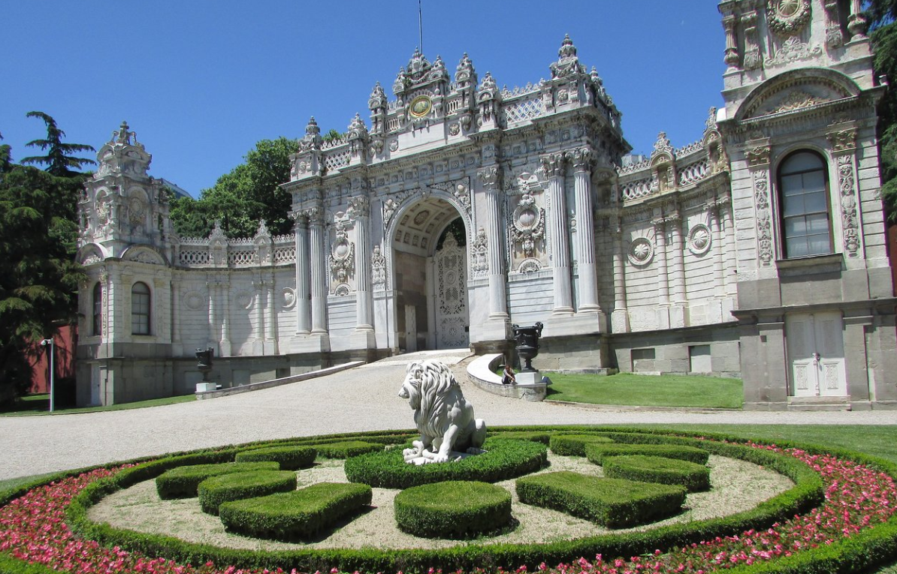

Did You Know?

Did you knowM&M's chocolate stands for the initials
for its inventors Mars and Murrie
Did You Know?

Ralph Lauren's original name was Ralph Lifshitz


PLACES YOU SHOULD VISIT IN İSTANBUL
Dolmabahce Palace
This palace was built in the mid 1800s to replace an earlier structure that was made of wood. The new palace incorporated sixteen separate buildings with stables, a flour mill and a clock tower among them.
Hagia Sophia
This architectural marvel displays 30 million gold tiles throughout its interior, and a wide, flat dome which was a bold engineering feat at the time it was constructed in the 6th century.
Suleymaniye Mosque
Famed architect Sinan built this majestic structure for one of the greatest rulers of the Ottoman Empire. Although this mosque is less ornate, there are many similarities between it and the Hagia Sophia since the same architect was responsible for both.
Topkapi Palace
This enormous palace was the Imperial residence of Ottoman sultans for almost 400 years. Although much of the palace is not accessible, the daily tours of the Harem are of great interest to tourists.
Galata Tower
Built in 500 A.D., Galata Tower is one of the dominating landmarks of Istanbul. It was used as a watchtower to help defend the city.
Rahmi M. Koc Museum
The Rahmi M Koç Museum is the first major museum in Turkey dedicated to the history of Transport, Industry and Communications. Housed in magnificent buildings - themselves prime examples of industrial archaeology - on the shore of the historic Golden Horn, the collection contains thousands of items from gramophone needles to full size ships and aircraft.
Miniaturk
Minaturk is just what it sounds like: a mini version of treasures found in Turkey. The park contains 105 models done in 1/25th scale, about half of them from Istanbul and the rest from Anatolia and the Ottoman territories outside of Turkey.
Ortakoy
This charming neighborhood of renovated old buildings is home to many restaurants, shops and artist galleries.
Balat
This neighborhood of Istanbul was once known as the Jewish quarter of the city. Today you can still find many synagogues here, as well as a more diverse group of residents.
Eyup Sultan Mosque
This mosque stands outside the city walls at the location where Hz Eyyubu El-Ensari, a noted Islamic individual, died in the assault on Constantinople in 670 AD.
Kız Kulesi
According to Turkish legend, a princess was locked in this tower to protect her from being bitten by a snake. Over the years the tower has been used as a customs station, lighthouse and a residence for retired naval officers.
Bosphorus Bridge
The Bosporus or Bosphorus, also known as the Strait of Istanbul, is a narrow, natural strait and an internationally significant waterway located in northwestern Turkey. It forms part of the continental boundary between Europe and Asia, and divides Turkey by separating Anatolia from Thrace
Did you knowM&M's chocolate stands for the initials
for its inventors Mars and Murrie
Ralph Lauren's original name was Ralph Lifshitz